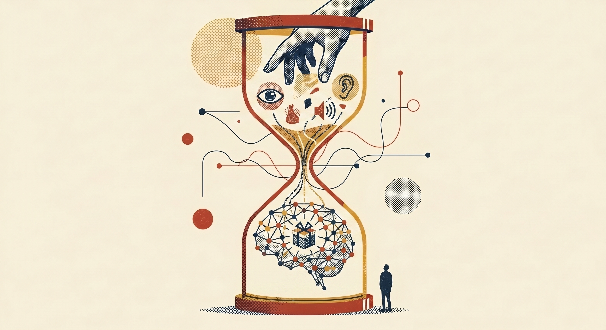

Most of what's reaching you isn't AI. It's noise about AI. Here's how I sort it.
Most of what's reaching your team isn't AI. It's noise about AI. Here's how I sort it.
✕ fallacy of exhaustion Filter overcomes the lie of "I don't have time." The tool is the time.
✕ fallacy of exhaustion Filter overcomes the team lie of "my team doesn't have time." The tool is the time.

What's missing is hierarchy.
What's missing is hierarchy for the team.
Stop asking what's new.
Stop forwarding what dropped.
Ask what works.
Ask what worked.
You can read. You have. The Substacks are open in tabs, the AI Twitter posts are screenshotted, the launch summaries have all been seen. What you're missing is hierarchy — and hierarchy is two things at once. Timing: what deserves your attention this week, what can sit till next quarter. Fit: what's right for your work, your role, the shape of the day you actually run. The same launch summary is essential for one person and noise for the next.
You're comparing AI to every tool that came before. How long did it take you to get good at Excel? Asana? Figma? 3D modeling? Years. You don't have another five years for any of them.
Saying "I don't have time to learn AI" is like saying "I don't have time to learn to drive — I have to keep walking everywhere." The tool is the time.
Claude bends to you. No syntax to memorize. No certification. No curriculum. The filter you actually need is someone who already drank from the firehose, sorted it for the kind of work you do, and tells you what stuck. Imagine if Monday morning was eight tabs shorter, and the one chat you opened already knew which two posts last week mattered for you.
Your team can read. They have. Every newsletter they subscribe to is someone else's filter — usually a person summarizing the firehose. That's a finer firehose with a friendly voice on top. Your inbox knows.
What they're missing isn't volume. It's hierarchy — in two parts. Timing: what deserves attention this week, what can wait. Fit: what matters for our roles, our clients, the work we actually do. Generic newsletters can't do either. The filter has to know who's asking.
That's how my team moved to 75% Claude utilization in four weeks while the rest of the industry was still arguing about training plans. Help them get there. Imagine if on Monday morning, your team opened one channel that already had the two posts from last week worth their attention — and a paragraph telling them why.
Tap any card. Each one is a small analogy that explains the moment — the back has the rest of it.
Skepticism is healthy. The fastest way through it isn't an argument — it's a small real task.
turn over↻There's a lot of noise around AI — overblown promises, bad demos, tools that don't work as advertised. You're right to question it. The best way through skepticism isn't an argument — it's using it for something small and real. Paste an email you're dreading. See what comes back. Most people who describe themselves as skeptics about AI have never actually tried it on a real task. The ones who have, even once, almost always come back.
"You don't have to believe in AI. You just have to try it once on something that actually costs you time." turn back↺Imagine someone handed you a laptop in 1985 and you said "I'll learn this in my spare time." Then kept doing the work by hand.
turn over↻That's what treating AI as a side skill looks like right now. AI is not a software tool you add to your stack, like learning a new Asana feature. It's the medium your work should live in. 90% of what you do every day — writing, thinking, researching, planning, communicating — Claude can do faster alongside you. The people at other agencies integrating now are not smarter or more technical. They just started earlier. The gap compounds.
"This is not a tool you learn on the side. It's the thing everything else runs on now." turn back↺The honest answer — not the reassuring one or the scary one. Just what the evidence actually shows.
turn over↻The jobs that disappear are the ones mostly made of repetitive, low-judgment tasks. The jobs that grow are where human taste, relationships, and creative judgment are the core — not the wrapper. The executional grunt work gets faster and cheaper. The strategic and creative thinking becomes more valuable, not less — because there's more capacity to pursue it. Your job isn't disappearing. The low-value parts of it are.
"The risk isn't that AI replaces you. It's that someone who uses AI well outpaces you. That's a solvable problem." turn back↺Four real moves I’ve made when I got tired of reading everything and started wishing the right two posts would just — show up.
Imagine if your team's onboarding to AI isn't a training deck — it's fourteen belief-system entry points, each with the two videos already worth watching for someone like them. Skeptic, sci-fi reader, practical doer, all sorted.
open↗ II one-for-one filterImagine if a former colleague, eighteen months out of agency life, gets handed exactly the ten chapters tuned to his career shape — and the videos and reading he should actually open first. No hunting.
open↗Imagine if you could ask Claude to look across your scoped hours, your delivered hours, and your invoices — at the same time — and surface every miscoded line. We did. It found about $433K in cost-recovery questions in a single afternoon.
internalImagine if the channel you set up to share AI links isn't another firehose — it's a place the team queries with Claude on demand. "What from last week mattered for our pitch?" Two seconds. Two posts. Done.
internalAI doesn't automate work. It hires staff you never had budget for.
Why thirty years of software conditioning is the real barrier to AI adoption.
Reach out. If something landed and you want to talk it through — your work, your team, a thing you’re trying to figure out — say hi. I take a few consulting hours when they fit. Casual rate, casual scope — $200 to $1,000, depending on what we’re doing.
Start here. A short PDF, a CLAUDE.md template, and a few starter skills — the smallest possible first push. The thing you open at 11pm and have running by morning.
"OK, I know what to use. But I'm still stuck. Same outputs, same ceiling."
"OK, our team knows what to use. But half are stuck at prompts."
It's not skill. It's the question you're asking.